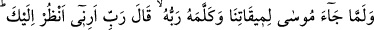
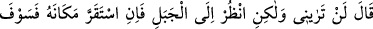
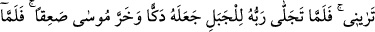
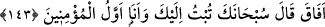

süre ahiret cumalarından dört cumadır. Şekillerin tesir bakımından en mükemmeli;
birler, onlar, yüzler ve binler basamağında dörtlü sûrettir. Nitekim Rasûlullah (s.a.v.):
“Ashâbın en hayırlısı dörttür. Seriyyelerin en hayırlısı da dört yüz askerden
oluşandır.”[83] buyurarak bu gerçeğe işaret etmiştir.
143. Musa tayin ettiğimiz vakitte (Tûr’a) gelip de Rabbi onunla konuşunca
“Rabbim! Bana (kendini) göster; seni göreyim!” dedi. (Rabbi): “Sen beni asla
göremezsin. Fakat şu dağa bak, eğer o yerinde durabilirse sen de beni göreceksin!”
buyurdu. Rabbi o dağa tecellî edince onu paramparça etti, Musa da baygın düştü.
Ayılınca dedi ki: Seni noksan sıfatlardan tenzih ederim, sana tevbe ettim. Ben
inananların ilkiyim.
“Mûsâ, tayin ettiğimiz vakitte bizimle buluşmaya gelip de” Yani, onun için tâyin
ettiğimiz ve belirlediğimiz kırk günü tamamladıktan sonra Rabb’i ile buluşmak üzere
Tûr dağına geldi.
Şayet, “Yücelerin yücesi ile toprağın altı Allah’a göre bir olduğu ve Allah yönlerden
münezzeh bulunduğu halde neden Allah konuşmak üzere dağı tâyin etmiştir?” diye
sorulursa şöyle cevap verilebilir:
Dağın sâbitlik, yükseklik ve teklik gibi vasıfları vardır. Yeryüzü, dağlar olmadan
karar kılmamıştır. Hak Teâlâ, yeryüzünü dağlarla sâbit kılmış ve onları yeryüzünün
kazıkları yapmıştır. Sâbitlik, yükseklik ve teklik gibi vasıflara sahip olduğu için Allah
Teâlâ emaneti, ilk olarak dağlara arzetti. Bu yüzden mekanlar içinde dağları üstün kıldı,
kelamına şâhid olmak ve cemal tecellîsine mazhar olmakla şereflendirdi. Hz.
Muhammed (a.s.)’ın göğsü dağda açıldı. Mûsâ (a.s.), Rabbi’ne dağda münacâtta
bulundu. Buradan makamların kendi aralarında üstünlük bakımından dereceleri olduğu
ortaya çıkmaktadır.
Bursalı Şeyh Üftade Efendi demiştir ki: “Cemaatlerin en hayırlısı, ruhlar cemaatidir.
Bunlar dağlarda ve ıssız yerlerde bulunurlar. Onların bulundukları yerlerin yeşilliği ve
güzelliği yaz kış devam eder, asla kaybolmaz. Biz de ruhlar geldiği için bu yere geldik.”
Fakir Bursevî derim ki: Üftâde Efendi, bu sözü ile Bursa’da Uludağ’ın eteğindeki
zâviyesini kast ediyor. Ben de bu zâviyeyi ve kalenin içinde bulunan türbesini ziyaret
ettim.